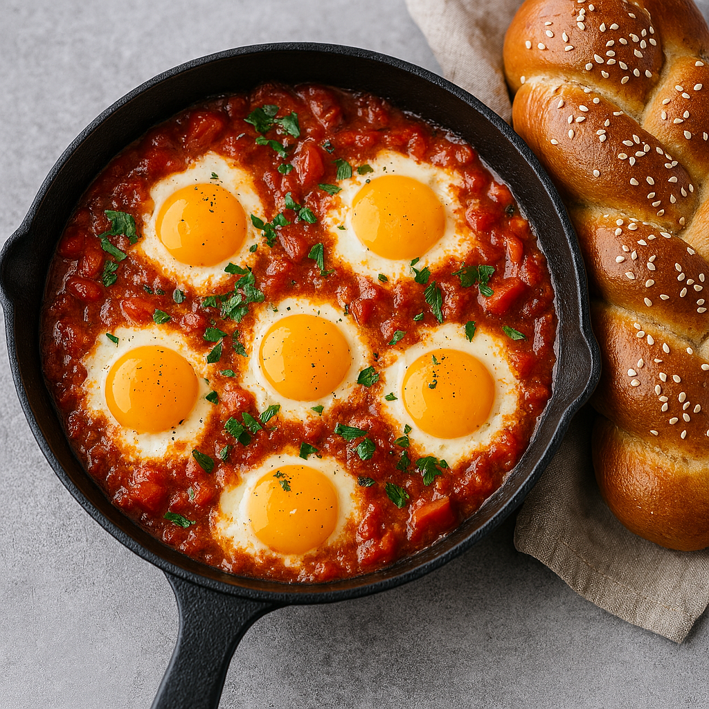

עברית
עברית
RECIPE
Israeli Shakshuka
A classic dish you can easily make at home.
Shakshuka is one of Israel’s most beloved dishes. Brought to Israel by Jewish immigrants from North Africa, it traditionally consists of spiced stewed tomatoes topped with gently poached eggs. Across the Middle East and North Africa, many regional variations of shakshuka exist.
Ingredients
- 2 tbsp olive oil
- 1 onion, peeled and finely diced
- 1 red bell pepper, seeded and finely chopped
- 1–2 cloves garlic, minced
- 1 chopped hot pepper or 1 tsp chipotle / hot chili flakes
- 1 tbsp paprika
- 4 cups ripe fresh tomatoes, diced
- 2 tbsp tomato paste
- Salt and freshly ground black pepper, to taste
- 6 eggs, at room temperature
- ½ tbsp fresh chopped parsley (for garnish, optional)
Instructions
- Heat a sauté pan over medium heat and add the olive oil. Add the diced onion and sauté for 3–4 minutes until it begins to soften. Add the garlic and cook for about 30 seconds, until fragrant.
- Add the chopped bell pepper and hot pepper. Sauté for 5–7 minutes, until softened. Stir in the paprika.
- Add the diced tomatoes and tomato paste, stirring until well combined. Season with salt and black pepper. Let the mixture simmer over medium heat for 7–10 minutes, until the sauce thickens and the tomatoes break down.
- Taste the sauce and adjust seasoning if needed. If the sauce becomes too thick, add a small splash of water to prevent burning.
- Crack each egg into a small bowl. Make small wells in the sauce and gently slide the eggs into the pan. Lightly season the eggs with salt.
- Cover the pan and simmer for 5–7 minutes, until the egg whites are set and the yolks are cooked to your liking.
- For runnier yolks, check frequently to avoid overcooking.
- Garnish with chopped parsley, if desired, and serve immediately.